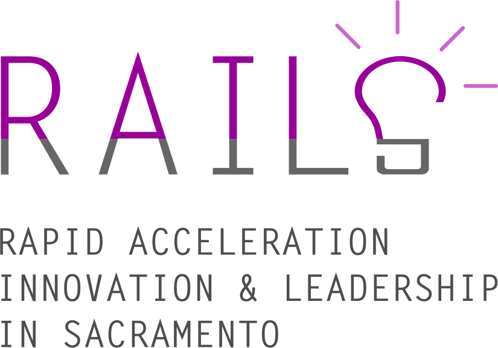
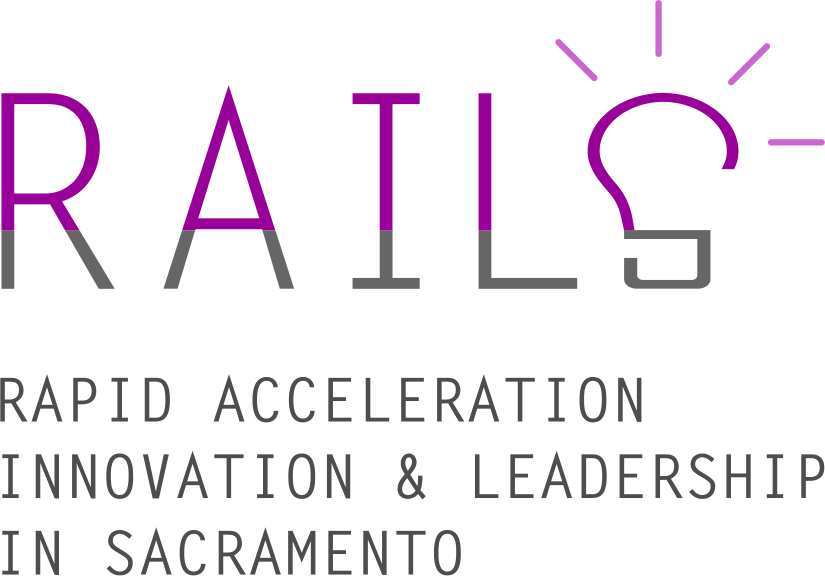

Sacramento is forstartups.
The City has committed $1.5M for RAILS grants to drive acceleration, innovation & leadership for entrepreneurs.

The City has committed $1.5M for RAILS grants to drive acceleration, innovation & leadership for entrepreneurs.
The Rapid Acceleration, Innovation, and Leadership in Sacramento (RAILS) program from the City of Sacramento provides grants to organizations and companies to help catalyze the region's startup ecosystem.
The newly created Mayor's Office of Innovation and Entrepreneurship has launched the RAILS program to develop the infrastructure needed in Sacramento to help develop, grow, and scale local startups. Through a mix of grant-making, networking, and hands-on support, we are here to give your organization the tools it needs to make Sacramento an even better place to start up.
The city has allocated roughly $1.5M to help those organizations already helping the startup ecosystem do even more in three areas: acceleration, innovation, and leadership. (Click on each heading for more details.)
Good entrepreneurs rely on other ones. We're looking for accelerator or incubator programs, focused on Sacramento, that can help take startups to the next level.
Innovation is at its best when it serves the needs of the community. We're seeing to pilot apps or develop tech non-profits that help the community and the city government work better.
Sacramento has a pipeline of potential entrepreneurs seeking to learn how to code. We want to help. If you have an business/coding training program, apply for a Leadership grant.
No. RAILS is designed for organizations — non-profit or for-profit — that help entrepreneurs grow their businesses through grants, not investments, or through piloting an app within the community.
The Mayor's Office is creating a Technology, Innovation, and Entrepreneurship Council (MTIEC). Even at the first planning meeting, over 60 local entrepreneurs, investors, and leaders came together and agreed on two thing: there's something special happening here -- ranging from new startups springing up to established ones raising rounds and scaling -- and that we all should work together to capitalize on this moment to put Sacramento on the map.
It's too often that it's said that impossible to work with the city. That's changing. Sacramento is opening up its data as fodder for new companies, placing city staff in co-working space around town, and even identifying challenges they see in their day-to-day jobs, which -- when solved -- could become scaleable businesses that work for not just a city, but every city. The door's open; come in.

Sacramento boasts one of the most diverse populations (by gender, ethnicity, socioeconomic status, etc), and we believe that is a strength — and that our innovation sector should reflect that diversity. We prioritize applicants that make a serious commitment to inclusion.

Good startups move fast: build, test, iterate. And repeat until you see real results. In the same way, we're looking for organizations that know how to deliver and deliver fast. We expect to see meaningful results by the end of 2016. (And we'll do our part of moving fast on the selection process, too.)

The city is fortunate to have a budding ecosystem to support innovation and entrepreneurship, ranging from training programs to accelerators. But we still believe that gaps exist. If you want to apply, make the case for how your program meets a real need for Sacramento.
The city isn't your typical investor or foundation. We are more of a platform to enable your organization or company to get more stuff done. That means we want to see evidence of support from other funders and partnership for leveraged impact.
Applicants will be screened by the Mayor's Office, City Council, and an external board of experts in technology, innovation, and business. Winners will be notified by July 10.
Applications are open to both non-profits and for-profits, as long as their mission aligns with the program's goals and principles.
Whether you're awarded a grant or not, you'll become a part of a network of innovators in Sacramento, which we will be convening regularly to collaborate, share successes and failures, and figure what we can keep doing to help Sacramento startups thrive.
Apply Now for a RAILS GrantAccording to research from the Bay Area Economic Council Institute, "the local multiplier effect for high-tech jobs is large. For each job created in the local high-tech sector, approximately 4.3 jobs are created..." This is because as startups turn into profitable businesses, the local economy grows and so do other sectors: retail, food, real estate, etc, so whether a booming startup scene in Sacramento will not only grow but diversify the economy.
A challenge that's been identified by leading entrepreneurs in Sacramento is the need for "follow on" funding — that is, capital to grow their business, while staying in the area. Accelerator and incubator programs are designed to support startups take that next step through mentorship, networking with investors, and business development. We're seeking Sacramento-based acceleration programs that'll help Sacramento-built companies not just stay in Sacramento, but grow to scale.
Organizations such as Code for America have shown that there's a new way for cities to approach technology: instead of drawn-out RFPs, cities can turn to nimble civic startups, technology non-profits, and community organizations/volunteers. Innovation partners will either directly deliver great civic technology for Sacramento (city hall and the community) or provide the resources and support they need to become sustainable (eg co-working space, mentorship, etc).
RAILS aims to support more than just one or two startups or organizations this year, but create a pipeline for entrepreneurs for years to come. That means investing in training programs — such as the national organizations, Girls Who Code, RailsBridge, Code2050 — that bring in new entrants into the technology space and give them the skills, business or technical, to turn their ideas into products and then their products into companies. And in particular, we hope to support such organizations in Sacramento that serve all of Sacramento: geographically, ethnically,